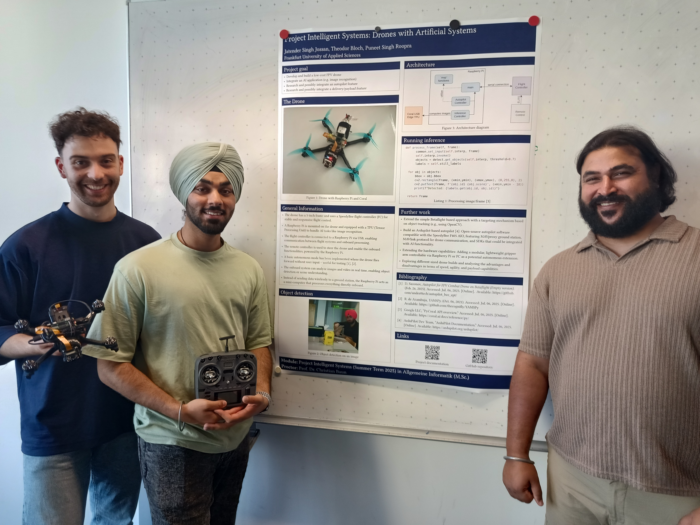
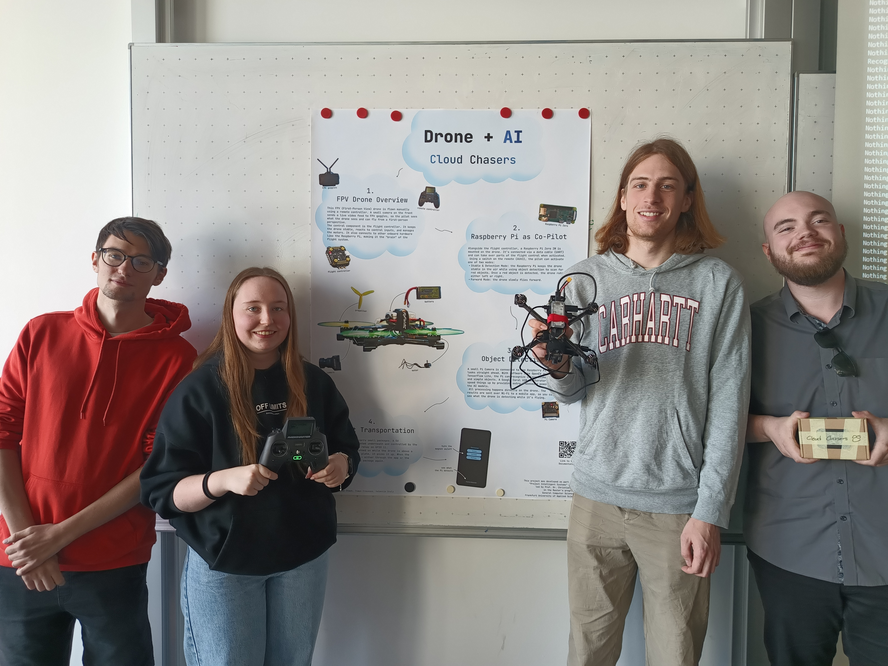

|
|
Wechseln Sie zur Seite in englischer Sprache
|
Die Einsatzmöglichkeiten von Drohnen sind vielseitig, aber der Zugang ist kostenintensiv und technisch komplex. Das ist aus Sicht der Hochschulen bedauerlich, denn gerade die Kombination von Drohnen und künstlicher Intelligenz eröffnet spannende Szenarien für Forschung und Lehre.
Teilnehmerinnen und Teilnehmer des Projekts werden kostengünstige KI-fähige Drohnen, die für Lehre und Forschung geeignet sind, entwickeln, untersuchen und dokumentieren.
Gruppen aus maximal 4 Personen entwickeln und bauen jeweils eine Drohne. Einzelne Schritte sind:
| Datum | Zeit | Raum | Inhalte |
|---|---|---|---|
| 10.04.2025 | 10:00-13:00 | 1-234 | Einführungsveranstaltung, Gruppenfindung, Anforderungsanalyse, Projektplanung (Zeitplanung) |
| 17.04.2025 | 10:00-13:00 | 1-234 | Vorstellung Zwischenergebnisse aller Teams, Entwicklung und Bau von Drohnen |
| 24.04.2025 | 10:00-13:00 | 1-234 | Vorstellung Zwischenergebnisse aller Teams, Entwicklung und Bau von Drohnen |
| 30.04.2025 | 10:00-11:00 | 1-234 | Sondertermin |
| 01.05.2025 | ----- | ----- | Tag der Arbeit |
| 08.05.2025 | 10:00-13:00 | 1-234 | Vorstellung Zwischenergebnisse aller Teams, Entwicklung und Bau von Drohnen |
| 15.05.2025 | 10:00-13:00 | 1-234 | Vorstellung Zwischenergebnisse aller Teams, Entwicklung und Bau von Drohnen |
| 21.05.2025 | 15:00-16:00 | 10-MZH | !!! Flugtests in der Mehrzweckhalle !!! |
| 22.05.2025 | 10:00-13:00 | 1-234 | Vorstellung Zwischenergebnisse aller Teams, Entwicklung und Bau von Drohnen |
| 28.05.2025 | 10:00-11:00 | 1-234 | Sondertermin |
| 29.05.2025 | ----- | ----- | Christi Himmelfahrt |
| 05.06.2025 | 10:00-13:00 | 1-234 | Vorstellung Zwischenergebnisse aller Teams, Entwicklung und Bau von Drohnen |
| 12.06.2025 | 10:00-11:15 | 10-MZH | !!! Flugtests in der Mehrzweckhalle !!! |
| 12.06.2025 | 11:15-13:00 | 1-234 | Vorstellung Zwischenergebnisse aller Teams, Entwicklung und Bau von Drohnen |
| 19.06.2025 | ----- | ----- | Fronleichnam |
| 26.06.2025 | 10:00-11:15 | 10-MZH | !!! Flugtests in der Mehrzweckhalle !!! |
| 26.06.2025 | 11:15-13:00 | 1-234 | Vorstellung Zwischenergebnisse aller Teams, Entwicklung und Bau von Drohnen |
| 03.07.2025 | ----- | ----- | Dienstreise |
| 10.07.2025 | 10:00-13:00 | 1-234 | Demonstration und Präsentation der Projektergebnisse aller Teams, Abschlussveranstaltung |
|  |  |
 |
| Ergebnis der Vorlesungsevaluation |
Zu erreichen bin ich am besten per E-Mail: christianbaun@fb2.fra-uas.de
|
Prof. Dr. Christian Baun Frankfurt University of Applied Sciences (1971-2014: Fachhochschule Frankfurt am Main) FB 2: Informatik und Ingenieurwissenschaften Stand: 10.7.2025 |